By
By Equivariant Neural Networks
Contents
10. Equivariant Neural Networks¶
The previous chapter Input Data & Equivariances discussed data transformation and network architecture decisions that can be made to make a neural network equivariant with respect to translation, rotation, and permutations. However, those ideas limit the expressibility of our networks and are constructed ad-hoc. Now we will take a more systematic approach to defining equivariances and prove that there is only one layer type that can preserve a given equivariance. The result of this section will be layers that can be equivariant with respect to any transform, even for more esoteric cases like points on a sphere or mirror operations. To achieve this, we will need tools from group theory, representation theory, harmonic analysis, and deep learning. Equivariant neural networks are part of a broader topic of geometric deep learning, which is learning with data that has some underlying geometric relationships. Geometric deep learning is thus a broad-topic and includes the “5Gs”: grids, groups, graphs, geodesics, and gauges. However, you’ll see papers with that nomenclature concentrated on point clouds (gauges), whereas graph learning and grids are usually called graph neural networks and convolutions neural networks respectively.
Audience & Objectives
This chapter builds on Input Data & Equivariances and a strong background in math. Although not required, a background on Hilbert spaces, group theory, representation theory, Fourier series, and Lie algebra will help. After completing this chapter, you should be able to
Derive and understand the mathematical foundations of equivariant neural networks
Reason about equivariances of neural networks
Know common symmetry groups
Implement G-equivariant neural network layers
Understand the shape, purpose, and derivation of irreducible function representations
Know how weight-constraints can be used as an alternative
Danger
This chapter teaches how to add equivariance for point clouds, but not permutations. To work with multiple molecules of different size/shape, we need to combine ideas from this chapter with permtuation equivariance from the Graph Neural Networks chapter. That combination is explored in Modern Molecular NNs. If you’re always working with atoms/points in the same order, you can ignore permutation equivariance.
10.1. Do you need equivariance?¶
Before we get too far, let me first try to talk you out of equivariant networks. The math required is advanced, especially because the theory of these is still in flux. There are five papers in the last few years that propose a general theory for equivariant networks and they each take a slightly different approach [FSIW20, CGW19, KT18, LW20, FWW21]. It is also easy to make mistakes in implementations due to the complexity of the methods. You must also do some of the implementation details yourself, because general efficient implementations of groups is still not solved (although we are getting close now for specifically SE(3)). You will also find that equivariant networks are not in general state of the art on point clouds – although that is starting to change with recent benchmarks set in point cloud segmentation [WAR20], molecular force field prediction [BSS+21], molecular energy predictions [KGrossGunnemann20], and 3D molecular structure generation [SHF+21].
Alternatives to equivariant networks are training and testing augmentation. Both are powerful methods for many domains and are easy to implement [SK19]. You can find details in the Input Data & Equivariances chapter. However, augmentation does not work for locally compact symmetry groups (e.g., SO(3)) — so you cannot use them for rotationally equivariant data. You can do data transformations like discussed in Input Data & Equivariances to avoid equivariance and only work with invariance.
So why would you study this chapter? I think these ideas are important and incorporating the equivariant layers into other network architectures can dramatically reduce parameter numbers and increase training efficiency.
10.2. Running This Notebook¶
Click the above to launch this page as an interactive Google Colab. See details below on installing packages.
Tip
To install packages, execute this code in a new cell.
!pip install dmol-book
If you find install problems, you can get the latest working versions of packages used in this book here
10.2.1. Outline¶
We have to lay some mathematical foundations before we can grasp the equations and details of equivariant networks. We’ll start with a brief overview of group theory so we can define the principle of equivariance generally. Then we’ll show how any equivariance can be enforced in a neural network via a generalization of convolutions. Then we’ll visit representation theory to see how to encode groups into matrices. Then we’ll see how these convolutions can be more easily represented using the generalization of Fourier transforms. Finally, we’ll examine some implementations. Throughout this chapter we’ll see three examples that capture some of the different settings.
10.3. Group Theory¶
A modern treatment of group theory can be found in [Zee16]. You can watch a short fun primer video on group theory from 3Blue1Brown here.
A group is a general object in mathematics. A group is a set of elements that can be combined in a binary operation whose output is another member of the group. The most common example are the integers. If you combine two integers in a binary operation, the output is another integer. Of course, it depends on the operation (\(1 \div 2\) does not give an integer), so specifically consider addition. Integers are not the example we care about though. We’re interested in groups of transformations that move points in a space. Operations like rotation, scaling, mirroring, or translating of single points. As you read about groups here, remember that the elements of the groups are not numbers or points. The group elements are transformations that act on points in the space. Notice I’m being a bit nebulous on what the space is for now. Let’s first define a group:
Group Definition
A group \(G\) is a set of elements (e.g., \(\{a, b, c, i, e\}\)) equipped with a binary operation (\(a\cdot{}b = c\)) whose output is another group element and the following conditions are satisfied:
Closure The output of the binary operation is always a member of the group
Associativity \((a\cdot{}b)\cdot{}c = a\cdot{}(b\cdot{}c)\)
Identity There is a single identity element \(e\) such that \(ex = x \forall x \in G\)
Inverse There exists exactly one inverse element \(i\) for each \(x\) such that \(xi = e\)
This is quite a bit of nice structure. We always have an inverse available. Applying the binary operations never accidentally leaves our group. One important property that is missing from this list is commutativity. In general, a group is not commutative so that \(a\cdot{}b \neq b\cdot{}a\). If the group does have this extra property, we call the group abelian. Another detail is how big the set is. It can indeed be infinite, which is why the integers or all possible rotations of rotations of points on a sphere can be represented as a group. One notational convenience we’ll make is that the binary operation “\(\cdot{}\)” will just be referred to as “dot” or sometimes multiplication if I get sloppy. The number of elements in a group \(|G|\) is known as the order.
The point of introducing the groups is so that they can transform elements of our space. This is done through a group action
Group Action
A group action \(\pi(g, v)\) is a mapping from a group \(G\) and a space \(\mathcal{X}\) to the space \(\mathcal{X}\):
So a group action takes in two arguments (binary): a group element and a point in a space \(\mathcal{X}\) and transforms the point to a new one: \(\pi(g, x_0) = x_1\). This is just a more systematic way of saying it transforms a point. The group action is neither unique to the space nor group. Often we’ll omit the function notation for the group action and just write \(gx = x'\).
Let’s introduce our three example groups that we’ll refer to throughout this chapter.
10.3.1. ⬡ Finite Group \(Z_6\)¶
The first group is about rotations of a hexagon 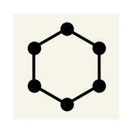. Our basic group member will be rotating the hexagon enough to shift all the vertices: 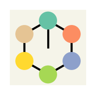 \(\rightarrow\) 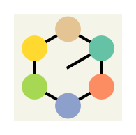. Notice I’ve colored the vertices and added a line so we can easily distinguish the orientation of the hexagon. Remember the hexagon, its colors, and if it is actually symmetric have nothing to do with the group. The group elements are transformations we apply to the hexagon.
One group action for this example can use modular arithmetic. If we represent a point in our space as \(\left\{0,\ldots, 5\right\}\) then the rotation transformation is \(x' = x + 1 \;(\bmod\; 6)\). For example, if we start at \(5\) and rotate, we get back to \(0\).
Our group must contain our rotation transformation \(r\) and the identity: \(\{e, r\}\). This set is not closed though: rotating twice \(r\cdot{}r\) \(\rightarrow\) \(\rightarrow\) 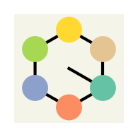 gives a new group element \(r^2\). To close the group we need to have \(\{e, r, r^2, r^3, r^4, r^5\}\).
Is this closed? Consider rotating twice and then five times \(r^5\cdot{}r^2\) \(\rightarrow\) \(\rightarrow\) You can see that this is the same as \(r\), so \(r^5\cdot{}r^2 = r\). What about the inverses element? The inverse of \(r\) is \(r^5\). \(r\cdot{}r^5 = e\). You can indeed see that each element has an inverse (\(e\) is its own inverse).
In general, we can write out the group as a multiplication table that conveys all group elements and defines the output of all binary outputs:
You can also see that the group is abelian (commutative). For example, \(r\cdot{}r^3 = r^3\cdot{}r\).
This kind of table is called a Cayley table. Although it doesn’t matter for this example, we’ll see later that the order of look-up matters. Specifically if our group is non-abelian. The row factor comes first and the column factor second. So \(r\cdot{}r^5\) means we look at row \(r\) and column \(r^5\) to get the group element, which in this case is \(e\).
This group of rotations is an example of a cyclic group and is isomorphic (same transformations, but operates on different objects) to integers modulo 6. Meaning, you could view rotation \(r^n\) as operating on integers \((x + n) \textrm{mod}\, 6\). Cyclic groups are written as \(Z_n\), so this group is \(Z_6\).
10.3.2. ▩ p4m¶
The second group contains translation, 90° rotations, and horizontal/vertical mirroring. We’re now operating on real numbers \(x,y\), so we’re in \(\mathbb{R}^2\). Let’s ignore the translation for now and just consider mirroring (\(s\)) and rotation by 90° (\(r\)) about the origin. What powers of \(r\) and \(s\) do we need to have a closed group? Considering rotations alone first, like last time we should only need up to \(r^3\). Here are the rotations visually: 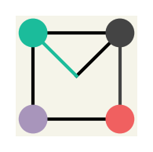, 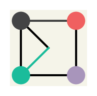, 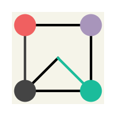, 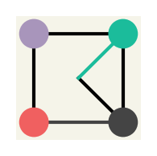 What about mirroring on horizontal/vertical? Mirroring along the horizontal axis: \(\rightarrow\) 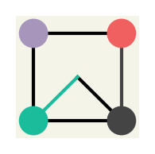 is actually the same as rotating twice and then mirroring along the vertical. In fact, you only need to have mirroing along one axis. We’ll choose the vertical axis by convention and denote that as \(s\).
We can build the group action piece by piece. The group action for rotation can be represented as a 2D rotation matrix acting a point \((x, y)\):
where \(k\) can allow us to do two rotations at once (\(k = 2\)) or the identity (\(k = 0\)). The vertical axis mirror action can be represented by
These two group actions can be ordered to correctly represent rotation then mirroring or vice-versa.
Now is this closed with the group elements \(\{e, r, r^2, r^3, s\}\)? Visually we have , , , , 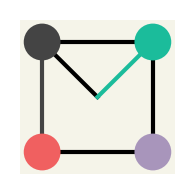? No. Consider \(r^2\cdot{}s\) \(\rightarrow\) \(\rightarrow\) which is not an element. To close the group, we need \(\{e, r, r^2, r^3, s, rs, r^2s, r^3s\}\). The multiplication table (which defines the elements too) is:
This is a Cayley table. Remember The row factor comes first and the column factor second. So \(rs\cdot{}r^3\) means we look at row \(rs\) and column \(r^3\) to get the group element, which in this case is \(r^2s\).
As you can see from the Cayley table, the group is closed. Remember, elements like \(rs\) are not a binary operation. They are group elements, hence the missing binary operation symbol. We also see that the group is not commutative. \(r\cdot{}s\) is \(\rightarrow\) \(\rightarrow\) 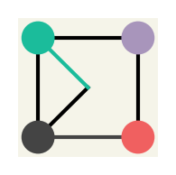, so \(r\cdot{}s = rs\) as expected. However, \(s\cdot{}r\) is \(\rightarrow\) \(\rightarrow\) 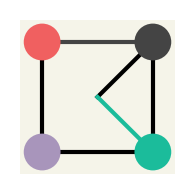, which is the group element \(r^3s\).
We can also read the inverses off the table. For example, the inverse of \(r\) is the column which gives the identity element: \(r^3\). This group is known as the dihedral group 4 \(D_4\). It has order 8.
Now consider the translation group elements. For simplicity, let’s only consider integer translations. We can label them as \(t_{w,h}\). So \(t_{3,4}\) means translate by \(x + 3\) and \(y + 4\). Is this a proper group? Certainly it associative, there is an identity \(t_{0,0}\) and an inverse for each element \(t_{-x, -y}\). What about closure? Yes, since translating twice is equivalent to one larger translation: \(t_{w,h}\cdot{}t_{w', h'} = t_{w + w', h + h'}\). This expression also shows group action for translation.
What about when we combine with our other elements from the \(D_4\) group? Consider the product \(r\cdot{}t_{3,4}\). This means translating by \((3,4)\) and then rotating by 90° about the origin. If you consider this acting on a single point \((0,0)\), you could get \((0,0) \rightarrow (3,4) \rightarrow (-4,3)\). What element of our group would this represent? At first it seems like it could be \(t_{-3,4}\). However, \(t_{-3,4}\) would only work specifically for starting at \((0,0)\). If you started at \((1,1)\), you would get to \((-4,5)\) with \(r\cdot{}t_{3,4}\) and \((-2,5)\) with \(t_{-3,4}\). To be correct for any point, we need a different group element. So the product \(r\cdot{}t_{3,4}\) actually cannot be a product but instead must be a group element. In fact, our new combined group is just going to be \(ab\) where \(a\) is an element from \(D_4\) and \(b\) is a translation. Thus \(r\cdot{}t_{3,4} = rt_{3,4}\).
Combing these two groups, the translation and \(D_4\), is an example of a semidirect product. A semidirect product just means that we create a new group by combining all possible group elements. There is some machinery for this, like the identity element in our new group is something like \(et_{0,0}\), and it has some other structure. It is called semidirect, instead of direct, because we can actually mix our group elements. The elements both act on points in the same space (\(x,y\) plane), so this makes sense. Another condition is that we can only have a semidirect product when one subgroup is normal and the translation subgroup is the normal subgroup. It is coincidentally abelian, but these two properties are not always identical. This semidirect product group is called p4m.
Below, is an optional section that formalizes the idea of combining these two groups into one larger group.
Normal Subgroup
A normal subgroup is a group of elements \(n\) from the group \(G\) called \(N\). Each \(n \in N\) should have the property that \(g\cdot{}n\cdot{}g^{-1}\) gives an element in \(N\) for any \(g\).
This does not mean \(g\cdot{}n\cdot{}g^{-1} = n\), but instead that \(g\cdot{}n\cdot{}g^{-1} = n'\) where \(n'\) is some other element in \(N\). For example, in p4m the translations form a normal subgroup. Rotating, translating, then doing the inverse of the rotation is equivalent to some translation. Notice that \(D_4\) is not a normal subgroup of p4m. If you do an inverse translation, rotate, then do a translation you may not have something equivalent to a rotation. It may be strange that we’re talking about the group p4m when we haven’t yet described how it’s defined (identity, inverse, binary op). We’ll do that with the semidirect product and then we could go back and verify that the translations are a normal subgroup more rigorously. I do not know the exact connection, but it seems that normal subgroups are typically abelian.
Semidirect Product
Given a normal subgroup of \(G\) called \(N\) and a subgroup \(H\), we can define \(G\) using the semidirect product. Each element in \(G\) is a tuple of two elements in \(N, H\) written as \((n, h)\). The identity is \((e_n, e_h)\) and the binary operation is:
where \(\phi(h)(n)\) is the conjugation of \(n\) \(\phi(h)(n) = h\cdot{}n\cdot{}h^{-1}\). When a transform \((n,h)\) is applied, we follow the normal convention that \(h\) is applied first followed by \(n\).
We are technically doing an outer semidirect product: combining them under the assumption that both \(D_4\) and \(T\) are part of a larger group which contains both. This is a bit of a semantic detail, but they are actually both part of \(p4m\) and a larger group called the affine group which includes, rotation, shear, translation, mirror, and scale operations on points. You could also argue they are part of groups which can be represented by 3x3 invertible matrices. Thus, you can combine these and get something that is still smaller than their larger containing group (\(p4m\) is smaller than all affine transformations).
One consequence of the semidirect product is that if you have a group element \((n,h)\) but want to instead apply \(n\) first (instead of \(h\)), you can use the binary operation:
so \(\phi(h)(n)\) somehow captures the effect of switching the order applying elements from \(H\) and \(N\). In our case, this means swapping the order of rotation/mirroring and translation.
To show what effect the semidirect product has in p4m, we can clean-up our example above about \(r\cdot{}t_{3,4}\). We should write the first element of this binary product \(r\) as a tuple of group elements: one from the \(D_4\) and one from the translations. Since there is no translation for \(r\), we use the identity. Thus we write \(r\) as \((t_{0,0}, r)\) in our semidirect product group p4m. Note that the normal subgroup comes first (applied last) by convention. Similarly, \(t_{3,4}\) is written as \((t_{3,4}, e)\). Our equation becomes:
where \(\phi\) is the automorphism that distinguishes a semidirect product from a direct product. The direct product has \(\phi(h)(n) = n\) so that the binary operation for the direct product group is just the element-wise binary products. \(\phi(h)(n) = hnh^{-1}\) for semidirect products. In our equation, this means \(\phi(r)(t_{3,4}) = r\cdot{}t_{3,4}\cdot{}r^3\). Substituting this and using the fact that both groups have the same binary operation (matrix multiplication, as we’ll see shortly):
Thus we’ve proved that translating by \(3,4\) followed by rotating can be expressed as \(r\cdot{}t_{3,4}\), which seems like a lot of work for an obvious result. I won’t cover the semidirect product of the group action, but we’ll see that we do not necessarily need to build a group action encapsulating both translation and rotation/mirroring.
10.3.3. ⚽ SO(3) Group¶
SO(3) is the group for analyzing 3D point clouds like trajectories or crystal structures (with no other symmetries). SO(3) is the group of all rotations about the origin in 3D. The group is non-abelian because rotations in 3D are not commutative. The group order is infinite, because you can rotate in this group by any angle (or sets of angles). If you are interested in allowing translations, you can use SE(3) which is the semidirect product of SO(3) and the translation group (like p4m), which is a normal subgroup.
The SO(3) name is a bit strange. SO stands for “special orthogonal” which are two properties of square matrices. In this case, the matrices are \(3\times3\). Orthogonal means the columns sum to one and special means the determinant is 1. Interestingly, all rotations in 3D around the origin are also the SO(3) matrices.
One detail is that since we’re rotating (no scale or translation) the distance to origin will not change. We cannot move the radius. The group action is the product of 3 3D rotation matrices (using Euler angles) \(R_z(\alpha)R_y(\beta)R_z(\gamma)\) where \(\alpha,\gamma \in [0, 2\pi], \beta \in [0, \pi]\) and
10.3.4. Groups on Spaces¶
We’ve defined transforms and their relationships to one another via group theory. Now we need to actually connect the transforms to a space. It is helpful to think about the space as Euclidean with a concept of distance and coordinates, but we’ll see that this is not required. Our space could be vertices on a graph or integers or classes. There are some requirements though. The first is that our space must be homogeneous (for the purposes of this chapter). Homogeneous means that from any point in our space \(x\) we can reach any other point with a transform \(g\) from our group \(G\). The second requirement is that if our group is infinite, the space must locally compact. This is a concept from topology and we won’t really ever be troubled by it. Most spaces we’ll see in chemistry or materials science (Euclidean spaces) are locally compact.
The space is homogeneous because our group includes “compound” rotations like \(r^4\). This is a finite group, so we do not require the space to be compact.
The space is homogeneous since we can use a translation to get to any other point. The space is locally compact because we are in 2D Euclidean geometry.
The space is homogeneous because we restrict ourselves to being on the sphere. The space is locally compact because we are in 3D Euclidean geometry.
The requirement of space being homogeneous is fairly strict. It means we cannot work with \(\mathbb{R}^2\) with a finite group like mirror and fixed rotations (i.e., p4m without translations). For example, going from \(x = (0,0)\) to \(x = (1,1)\) cannot be done with rotations/mirror group elements alone. As you can see, working in a Euclidean space thus requires a locally compact group. Similarly, a finite group implies a finite space because of the homogeneous requirement.
This may seem like a ton of work. We could have just started with \(xyz\) coordinates and rotation matrices. Please continue to wait though, we’re about to see something incredible.
10.4. Equivariance Definition¶
You should be thinking now about how we can define equivariance using our new groups. That’s where we’re headed. We need to do a bit of work now to “lift” neural networks and our features into the framework we’re building. First, in Input Data & Equivariances we defined our features as being composed of tuples \((\vec{r}_i, \vec{x}_i)\) where \(\vec{r}_i\) is a spatial point and \(\vec{x}_i\) are the features at that point. Let’s now view these input data as functions, defined as \(f(\vec{r}) = \vec{x}\) and assume if a point \(\vec{r}'\) isn’t in our training data then \(f(\vec{r}') = \vec{0}\). More formally, our training data is a function \(f:\mathcal{X} \rightarrow \mathbb{R}^n\) that maps from our homogeneous space \(\mathcal{x}\) to real vector (or complex vectors) of dimension \(n\).
We have promoted our data into a function and now a neural network can no longer be just function since its input is a function. Our neural network will be also promoted to a linear map, which has an input of a function and an output of a function. Formally, our neural network is now \(\psi: f(\mathcal{X}) \rightarrow f'(\mathcal{X})\). Notice the input and output spaces of the functions may not be the same (we may input a molecule 3D and output a 1D scalar for energy). Linear maps are also called operators, depending on which branch of mathematics you’re in.
The last piece of equivariance is to promote our group elements, which transform points, to work on functions.
G-Function Transform Definition
An element \(g\) of group \(G\) on the homogeneous space \(\mathcal{X}\) can act on a function \(f:\mathcal{X}\rightarrow \mathbb{R}^n\) via the group transform linear map \(\mathbb{T}_g: f(\mathcal{X}) \rightarrow f'(\mathcal{X})\) defined as
This definition takes a moment to think about. Consider a translation of an image. You want to move an image to the left by 10 pixels, so \(g = t_{10,0}\). The image is defined by the function \(f(x,y) = (r, g, b)\), where \(r,g,b\) is the color. We want \(T_g f(x, y)\). Without knowing about groups, you can intuit that translating can be done by creating a new function \(f'(x', y') = f(x - 10, y)\). Notice that the inverse of \(g^{-1} = t_{-10, 0}\) acts on the points, not \(g\). Recall that a group requires there to be an inverse for any group element.
Now we have all the pieces to define an equivariant neural network:
Equivariant Neural Network Definition
Given a group \(G\) that has actions on two homogeneous space \(\mathcal{X_1}\) and \(\mathcal{X_2}\), a G-equivariant neural network is a linear map \(\psi: f(\mathcal{X_1}) \rightarrow f'(\mathcal{X_2})\) that has the property[KT18]:
where \(\mathbb{T}_g\) and \(\mathbb{T}'_g\) are G-function transforms on the two spaces. If \(\mathbb{T}'_g = \textrm{id}\), meaning the transform is the identity in the output space regardless of \(g\), then \(\psi\) is a G-invariant neural network.
The definition means that we get the same output if we transform the input function to the neural network or transform the output (in the equivariant case). In a specific example, if we rotate the input by 90 degrees, that’s the same result as rotating the output by 90 degrees. Take a moment to ensure that matches your idea of what equivariance means. After all this math, we’ve generalized equivariance to arbitrary spaces and groups.
What the two input and output spaces? It’s easiest to think about them as the same space for equivariant neural networks. For an invariant, the output space is typically a scalar. Another example for an invariant one could be aligning a molecular structure to a reference. The neural network should align to the same reference regardless of how the input is transformed.
10.5. G-Equivariant Convolution Layers¶
Recall that a neural network is made-up of a linear part (e.g., $\vec{h} = \mathbf{W}\vec{x} + \vec{b}) and a non-linearity. Kondor and Trivedi showed that there is only one way to make a G-equivariant neural network is to make the linear part:
G-Equivariant Convolution Theorem
A neural network layer (linear map) \(\psi\) is G-equivariant if and only if its form is a convolution operator \(*\)
where \(\mu\) is the group Haar measure. A Haar measure is a generalization of the familiar integrand factor you see when doing integrals in polar coordinates or spherical coordinates.
As you can see from the theorem, we must introduces more new concepts. The first important detail is that all our functions are over our group elements (technically the quotient space \(G / H_0\)), not our space. This should seem strange. We will easily fix this because there is a (bijective) way to assign one group element to each point in the space. The second detail is the \(f \uparrow^G\). The order of the group \(G\) is greater than or equal to the number of points in our space, so if the function is defined on our space, we must “lift” it up to the group \(G\) which has more elements. The last detail is the point about quotient spaces. Quotient spaces are how we cut-up our group \(G\) into subgroups so that one has the same order as the number of points in our space. Below I detail these new concepts just enough so that we can implement and understand these convolutions.
Warning
To actually learn, you need to put in a nonlinearity after the convolution. A simple (and often used) case is to just use a standard non-linear function like ReLU pointwise (applied to each term in \(g \in G\) sum individually). We’ll look at more complex examples below for the continuous case.
10.6. Converting between Space and Group¶
Let’s see how we can convert between functions on the space \(\mathcal{X}\) and functions on the group \(G\). \(|G| \geq |\mathcal{X}|\) (\(|G|\) is number of elements) because the space is homogeneous, so it is rare that we can uniquely replace each point in space with a group in \(G\). Instead, we will construct a partitioning of \(G\) into \(|\mathcal{X}|\) sets called a quotient space \(G / H\) such that \(|G / H| = |\mathcal{X}|\). It turns out, there is a well-studied approach to arranging elements in a group called cosets. Constructing cosets is a two-step process. First we define a subgroup \(H\). A subgroup means it is itself a group; it has identities and inverses. We cannot accidentally leave \(H\), \(h_1\cdot{} h_2 \in H\). For example, translation transformations are a subgroup because you cannot accidentally create a rotation when combining two translations.
After constructing a subgroup \(H\), we can apply an element \(g\) to every element in \(H\), written as
If this sounds strange, wait for an example. \(gH\) is called a left coset. We mention the direction because \(G\)’s binary operation may not be commutative (non-abelian). What happens if \(g\) is in \(H\)? No problem; \(H\) is a group so applying an element to every element in \(H\) just gives back \(H\) (i.e. \(hH = H\)). Cosets are not groups, they are definitely not closed or have inverses. What’s the point of making all these cosets? Remember our goal is to partition \(G\) into a bunch of smaller sets so that we have one for each point in \(\mathcal{X}\). Constructing cosets partitions \(G\) for sure, but do we get enough? Could we accidentally have overlaps between cosets, where \(g_1H\) and \(g_2H\) contain the same elements?
It turns out if our space is homogeneous we can construct our cosets in a special way so that we have exactly one coset for each point in the space \(\mathcal{X}\). To get our group, we pick an arbitrary point in the space \(x_0\). Often this will be the origin. Then we choose our subgroup \(H\) to be all group elements that leave \(x_0\) unchanged. This is called a stabilizer subgroup \(H_0\) and is defined as
We will not prove that this is a group itself. This defines our subgroup. Here’s the remarkable thing: we will have exactly enough cosets with this stabilizer as there are points in \(\mathcal{X}\). However, multiple \(g\)s will give the same coset (as expected, since \(|G| > |\mathcal{X}|\)).
Now comes the details, how do we match-up points in \(\mathcal{X}\) to the cosets? We know that the space is homogeneous so each point in \(x\) can be reached from our arbitrary origin by a group element \(gx_0 = x\). That’s one way to connect points to group elements, but which coset will \(g\) be in? There also may be multiple \(g\)s that satisfy the equation. It turns out that all the group elements that satisfy the equation will be in the same coset. The reason why is that \(g\cdot h x_0 = gx_0\) because all elements \(h\) of the stabilizer group do not move \(x_0\). Quite elegant.
How do we find which coset we need? Since the identity \(e\) is in \(H_0\) (by definition), the coset \(gH_0\) will contain \(g\) itself. Thus, we can convert a function \(f(x)\) from the space to be a function on the quotient space \(f(g)\) via what we call lifting:
All that discussion and thinking for such a simple equation. One point to note is that you can plug any element \(g\) from the group into \(f\uparrow^G(g)\) but it is bijective only over \(G / H\) (the cosets). Your null space will be the whole subgroup \(H_0\).
Going the opposite, from a function on the group to the space, is called projecting because it will have a smaller domain. We can use the same process as above. We create the quotient space and then just take the average over a single coset to get a single value for the point \(x\):
where we’ve used the fact that \(|gH_0| = |H_0|\). Note that the coset generating element \(g\) is found by solving \(gx_0 = x\), where of course \(g\) is not a stabilizing element (otherwise \(gx_0 = x_0\) by definition). Let’s see some examples now to make all of these easier to understand.
Our function is the color of the vertices in our picture \(f(x) = (r, g, b)\) where \(r,g,b\) are fractions of the color red, blue green. If we define the vertices to start at the line pointing up, we can label them \(0,\ldots,5\). So for example \(f(0) =(0.11, 0.74, 0.61)\), which is the color of the top vertex.
We can define the origin as \(x_0 = 0\). \(|G| = |\mathcal{X}|\) for this finite group and thus our stabilizer subgroup only contains the identity \(H_0 = \{e\}\). Our cosets and their associated points will be \((eH_0, x = 0), (rH_0, x = 1), (r^2H_0, x = 2), (r^3H_0, x = 3), (r^4H_0, x = 4), (r^5H_0, x = 5)\). The lifted \(f\uparrow^G(g)\) can be easily defined using these cosets.
p4m is intended for images, so our example will be a function \(f: \mathbb{R}^2 \rightarrow \mathbb{R}^3\) that represents a color image. This group contains rotations about the origin, so if we choose the origin as our stabilizer it will cleanly separate our group. Namely:
where our elements have been written out as the semidirect product of translations and \(D_4\) as discussed previously. Let’s compute a coset to get a sense of this process. Consider the group element \(t_{1,0}e_r\) creating the coset \(t_{1,0}e_rH_0\). The first element of the coset is \(t_{1,0}e_r \cdot e_ne_r = t_{1,0}e_r\). The second element is \(t_{1,0}e_r \cdot t_{0,0}r = t_{1,0}r\). The rest of the elements of this coset are:
Note these were simple to compute because \(\phi(g)(e_n) = ge_ng^{-1} = e_n\). Now what point is this associated with? Consider the first non-identity coset element \(t_{1,0}r\) acting on the origin: \((0,0)\rightarrow(0,0)\rightarrow(1,0)\). You’ll see similarly that all elements in the coset will follow the same pattern: the first element from \(H_0\) doesn’t move the origin (by definition) and the second element is the same in the coset (translation by \(x + 1\)). Thus, the first coset \(t_{1,0}e_rH_0\) is associated with the point \((1,0)\).
Now consider a coset that involves a \(D_4\) element: \(t_{1,0}rsH_0\). You can compute its elements as:
This contains all the same elements as the coset \(t_{1,0}e_rH_0\)! This is because we have more group elements than space in \(\mathcal{X}\); multiple \(g\)’s result in the same coset. This doesn’t change our intuition though: the translation transform still defines the connection between our coset and the space. Our lifting function will be
For this example, our function will be points on the sphere \(f(x) = \sum_i \delta(x - x_i)\). We can represent the group element rotations (among other choices) as being the product of three rotations about the \(y\) and \(z\) axes: \(R_z(\alpha)R_y(\beta)R_z(\gamma)\) If that seems surprising, remember that rotations are not commutative. Santa lives in the north pole, so let’s choose the north pole \((0, 0, 1)\) as our stabilizer. You cannot choose \((0,0,0)\) remember because it is not in the space. Our subgroup is rotations that only involve \(\gamma\), for example \(R_z(0)R_y(0)R_z(90)\) is in our subgroup \(H_0\). Let’s generate a coset, say for the group element \(g = R_z(120)R_y(0)R_z(60)\). The coset \(gH_0\) will be rotations of \(R_z(120)R_y(0)R_z(60)R_z(0)R_y(0)R_z(\gamma)\), which can be simplified to \(R_z(120)R_y(0)R_z(60 + \gamma)\). Thus the coset is \(gH_0 = \left\{R_z(120)R_y(0)R_z(60 + \gamma)\, \forall \gamma \in [0, 2\pi]\right\}\)
Now what point is associated with this coset? It will be this rotation applied to the origin: \(R_z(120)R_y(0)R_z(60 + \gamma)x_0\). The first rotation has no effect, by definition, so it becomes \(R_z(120)R_y(0)x_0\). The general form is that the coset for a point \(x\) is the rotation such that \(R_z(\alpha)R_y(\beta)x_0 = x\). This quotient space happens to be identical to SO(2), rotations in 2D, because it’s defined by two angles. The lifting functions is defined as:
10.7. G-Equivariant Convolutions on Finite Groups¶
We now have all the tools to build an equivariant network for a finite group. We’ll continue with our example group \(Z_6\) on vertices of a hexagon. The cells below does our imports.
import numpy as np
import matplotlib.pyplot as plt
import dmol
from dmol import color_cycle
Let’s start by defining our input function:
# make our colors (nothing to do with the model)
vertex_colors = []
for c in color_cycle:
hex_color = int(c[1:], 16)
r = hex_color // 256**2
hex_color = hex_color - r * 256**2
g = hex_color // 256
hex_color = hex_color - g * 256
b = hex_color
vertex_colors.append((r / 256, g / 256, b / 256))
vertex_colors = np.array(vertex_colors)
def z6_fxn(x):
return vertex_colors[x]
z6_fxn(0)
array([0.265625, 0.265625, 0.265625])
If we assume our group is indexed already by our vertex coordinates \(\{0,\ldots, 5\}\) then our function is already defined on the group. Now we need our trainable kernel function. It will be defined like our other function.
# make weights be 3x3 matrices at each group element
# 3x3 so that we have 3 color channels in and 3 out
weights = np.random.normal(size=(6, 3, 3))
def z6_omega(x):
return weights[x]
z6_omega(3)
array([[-0.18718385, 1.53277921, 1.46935877],
[ 0.15494743, 0.37816252, -0.88778575],
[-1.98079647, -0.34791215, 0.15634897]])
Now we can define our group convolution operator from Equation 8.6. We do need one helper function to get an inverse group element. Remember too that this returns a function
def z6_inv(g):
return (6 - g) % 6
def z6_prod(g1, g2):
return (g1 + g2) % 6
def conv(f, p):
def out(u):
g = np.arange(6)
# einsum is so we can do matrix product for elements of f and g,
# since we have one matrix per color
c = np.sum(np.einsum("ij,ijk->ik", f(z6_prod(u, z6_inv(g))), p(g)), axis=0)
return c
return out
conv(z6_fxn, z6_omega)(0)
array([ 1.5752359 , 3.70837565, -3.68896212])
At this point, we can now verify that the CNN is equivariant by comparing transforming the input function and the output function. We’ll need to define our function transforms as well.
def z6_fxn_trans(g, f):
return lambda h: f(z6_prod(z6_inv(g), h))
z6_fxn(0), z6_fxn_trans(2, z6_fxn)(0)
(array([0.265625, 0.265625, 0.265625]),
array([0.94921875, 0.70703125, 0.3828125 ]))
First we’ll compute \(\psi\left[\mathbb{T}_2 f(x)\right]\) – the network acting on the transformed input function
trans_element = 2
trans_input_fxn = z6_fxn_trans(trans_element, z6_fxn)
trans_input_out = conv(trans_input_fxn, z6_omega)
Now we compute \(\mathbb{T}_2\psi\left[f(x)\right]\) – the transform acting on the network output
output_fxn = conv(z6_fxn, z6_omega)
trans_output_out = z6_fxn_trans(trans_element, output_fxn)
print("g -> psi[f(g)], g -> psi[Tgf(g)], g-> Tg psi[f(g)]")
for i in range(6):
print(
i,
np.round(conv(z6_fxn, z6_omega)(i), 2),
np.round(trans_input_out(i), 2),
np.round(trans_output_out(i), 2),
)
g -> psi[f(g)], g -> psi[Tgf(g)], g-> Tg psi[f(g)]
0 [ 1.58 3.71 -3.69] [ 4.16 0.82 -2.78] [ 4.16 0.82 -2.78]
1 [ 4.06 2.55 -3.2 ] [ 2.9 2.33 -2.6 ] [ 2.9 2.33 -2.6 ]
2 [ 2.59 2.34 -1.97] [ 1.58 3.71 -3.69] [ 1.58 3.71 -3.69]
3 [ 2.66 2.25 -1.13] [ 4.06 2.55 -3.2 ] [ 4.06 2.55 -3.2 ]
4 [ 4.16 0.82 -2.78] [ 2.59 2.34 -1.97] [ 2.59 2.34 -1.97]
5 [ 2.9 2.33 -2.6 ] [ 2.66 2.25 -1.13] [ 2.66 2.25 -1.13]
We can see that the outputs indeed match and therefore our network is G-equivariant. One last detail is that it would be nice to visualize this, so we can add a nonlinearity to remap our output back to color space. Our colors should be between 0 and 1, so we can use a sigmoid to put the activations back to valid colors. I’ll hide the input since it contains irrelevant code, but here is the visualization of the previous numbers showing the equivariance.
c1 = conv(z6_fxn, z6_omega)
c2 = trans_input_out
c3 = trans_output_out
titles = [
r"$\psi\left[f(g)\right]$",
r"$\psi\left[\mathbb{T}_2f(g)\right]$",
r"$\mathbb{T}_2\psi\left[f(g)\right]$",
]
def sigmoid(x):
return 1 / (1 + np.exp(-x))
def convert_color(r, g, b):
h = int(sigmoid(r) * 256**3 + sigmoid(g) * 256**2 + sigmoid(b) * 256)
return "#{:6X}".format(h)
c1 = [sigmoid(c1(i)) for i in range(6)]
c2 = [sigmoid(c2(i)) for i in range(6)]
c3 = [sigmoid(c3(i)) for i in range(6)]
fig, axs = plt.subplots(1, 3, squeeze=True)
points = np.array(
[
(0, 1),
(0.5 * np.sqrt(3), 0.5),
(0.5 * np.sqrt(3), -0.5),
(0, -1),
(-0.5 * np.sqrt(3), -0.5),
(-0.5 * np.sqrt(3), 0.5),
]
)
for i in range(3):
axs[i].scatter(points[:, 0], points[:, 1], color=[c1, c2, c3][i])
# plt.plot([0, points[0,0]], [0, points[0, 1]], color='black', zorder=0)
axs[i].set_xticks([])
axs[i].set_yticks([])
axs[i].set_xlim(-1.4, 1.4)
axs[i].set_ylim(-1.4, 1.4)
axs[i].set_aspect("equal")
axs[i].set_title(titles[i], fontsize=8)
plt.show()
As you can see, our output looks the same if we apply the rotation either before or after, so our network is G-equivariant.
10.8. G-Equivariant Convolutions with Translation¶
How can we treat the p4m group? We cannot directly use the continuous convolution definition because the rotations/mirror subgroup is finite and we cannot use the finite convolution because the translation subgroup is locally compact (infinitely many elements). Instead, we will exploit the structure of the group: it is constructed via a semidirect product so each group element is a pair of elements. Namely we can rewrite Equation 8.6 using the constituent subgroups \(N \rtimes H\) and writing elements \(g = hn, g^{-1} = n^{-1}h^{-1}\).
Now we must treat the fact that there are an infinite number of elements in \(N\) (the translations). We can simply choose the kernel function (\(\omega\)) to only have support (\(\omega(g) > 0\)) at locations we want and that will simplify the integration. This may seem ad-hoc – but remember we already made choices like not including 45° rotations. There do exist ways to systematically treat how to narrow the kernels into “neigbhorhoods” of groups in [FSIW20] or you can find a rigorous derivation specifically for p4 in [RBTH20] or [CW16].
Our goal for the p4m group is image data, so we’ll limit the support of the kernel to only integer translations (like pixels) and limit the distance to 5 units. This simply reduces our sum over the normal subgroup (\(N\)). We can now begin our implementation. We’ll start by loading an image which will serve as our function. It is a \(32\times32\) RGB image. Remember that we need to allow points to have 3 dimensions, where the third dimension is always 1 to accommodate our augmented space.
# From https://gist.github.com/Susensio/61f4fee01150caaac1e10fc5f005eb75
from functools import lru_cache, wraps
def np_cache(*args, **kwargs):
"""LRU cache implementation for functions whose FIRST parameter is a numpy array
>>> array = np.array([[1, 2, 3], [4, 5, 6]])
>>> @np_cache(maxsize=256)
... def multiply(array, factor):
... print("Calculating...")
... return factor*array
>>> multiply(array, 2)
Calculating...
array([[ 2, 4, 6],
[ 8, 10, 12]])
>>> multiply(array, 2)
array([[ 2, 4, 6],
[ 8, 10, 12]])
>>> multiply.cache_info()
CacheInfo(hits=1, misses=1, maxsize=256, currsize=1)
"""
def decorator(function):
@wraps(function)
def wrapper(np_array, *args, **kwargs):
hashable_array = array_to_tuple(np_array)
return cached_wrapper(hashable_array, *args, **kwargs)
@lru_cache(*args, **kwargs)
def cached_wrapper(hashable_array, *args, **kwargs):
array = np.array(hashable_array)
return function(array, *args, **kwargs)
def array_to_tuple(np_array):
"""Iterates recursivelly."""
try:
return tuple(array_to_tuple(_) for _ in np_array)
except TypeError:
return np_array
# copy lru_cache attributes over too
wrapper.cache_info = cached_wrapper.cache_info
wrapper.cache_clear = cached_wrapper.cache_clear
return wrapper
return decorator
# load image and drop alpha channel
W = 32
try:
func_vals = plt.imread("quadimg.png")[..., :3]
except FileNotFoundError as e:
# maybe on google colab
import urllib.request
urllib.request.urlretrieve(
"https://raw.githubusercontent.com/whitead/dmol-book/master/dl/quadimg.png",
"quadimg.png",
)
func_vals = plt.imread("quadimg.png")[..., :3]
# we pad it with zeros to show boundary
func_vals = np.pad(
func_vals, ((1, 1), (1, 1), (0, 0)), mode="constant", constant_values=0.2
)
def pix_func(x):
# clip & squeeze & round to account for transformed values
xclip = np.squeeze(np.clip(np.round(x), -W // 2 - 1, W // 2)).astype(int)
# points are centered, fix that
xclip += [W // 2, W // 2, 0]
# add 1 to account for padding
return func_vals[xclip[..., 0] + 1, xclip[..., 1] + 1]
def plot_func(f, ax=None):
if ax is None:
plt.figure(figsize=(2, 2))
ax = plt.gca()
gridx, gridy = np.meshgrid(
np.arange(-W // 2, W // 2), np.arange(-W // 2, W // 2), indexing="ij"
)
# make it into batched x,y indices and add dummy 1 indices for augmented space
batched_idx = np.vstack(
(gridx.flatten(), gridy.flatten(), np.ones_like(gridx.flatten()))
).T
ax.imshow(f(batched_idx).reshape(W, W, 3), origin="upper")
ax.axis("off")
plot_func(pix_func)
Now let’s define our G-function transform so that we can transform our function with group elements. We’ll apply a \(rst_{12,-8}\) element to our function.
def make_h(rot, mirror):
"""Make h subgroup element"""
m = np.eye(3)
if mirror:
m = np.array([[-1, 0, 0], [0, 1, 0], [0, 0, 1]])
r = np.array(
[[np.cos(rot), -np.sin(rot), 0], [np.sin(rot), np.cos(rot), 0], [0, 0, 1]]
)
return r @ m
def make_n(dx, dy):
"""Make normal subgroup element"""
return np.array([[1, 0, dx], [0, 1, dy], [0, 0, 1]])
def g_func_trans(g, f):
"""compute g-function transform"""
@np_cache(maxsize=W**3)
def fxn(x, g=g, f=f):
ginv = np.linalg.inv(g)
return f(ginv.reshape(1, 3, 3) @ x.reshape(-1, 3, 1))
return fxn
g = make_h(np.pi, 1) @ make_n(12, -8)
tfunc = g_func_trans(g, pix_func)
plot_func(tfunc)
Now we need to create our lifting and projecting maps to go from functions over points to functions over group elements. Remember, our lifting function just takes the translation element and makes that point.
# enumeraet stabilizer subgrou (rotation/mirrors)
stabilizer = []
for i in range(4):
for j in range(2):
stabilizer.append(make_h(i * np.pi / 2, j))
def lift(f):
"""lift f into group"""
# create new function from original
# that is f(gx_0)
@np_cache(maxsize=W**3)
def fxn(g, f=f):
return f(g @ np.array([0, 0, 1]))
return fxn
def project(f):
"""create projected function over space"""
@np_cache(maxsize=W**3)
def fxn(x, f=f):
# x may be batched so we have to allow it to be N x 3
x = np.array(x).reshape((-1, 3))
out = np.zeros((x.shape[0], 3))
for i, xi in enumerate(x):
# find coset gH
g = make_n(xi[0], xi[1])
# loop over coset
for h in stabilizer:
ghi = g @ h
out[i] += f(ghi)
out[i] /= len(stabilizer)
return out
return fxn
# try them out
print("lifted", lift(pix_func)(g))
print("projected", project(lift(pix_func))([12, -8, 0]))
lifted [0.93333334 0.7176471 0.43137255]
projected [[0.72941178 0.71764708 0.72156864]]
We now need to create our kernel functions \(\phi\). Rather than make a function of the group elements, we’ll use indices to represent the different group elements. Remember we need to apply a sigmoid at the end so that we stay in color space.
kernel_width = 5 # must be odd
# make some random values for kernel (untrained)
# kernel is group elements x 3 x 3. The group elements are structured (for simplicity) as a N x 5 x 5
# the 3 x 3 part is because we have 3 color channels coming in and 3 going out.
kernel = np.random.uniform(
-0.5, 0.5, size=(len(stabilizer), kernel_width, kernel_width, 3, 3)
)
def conv(f, p=kernel):
@np_cache(maxsize=W**4)
def fxn(u):
# It is possible to do this without inner for
# loops over convolution (use a standard conv),
# but we do this for simplicity.
result = 0
for hi, h in enumerate(stabilizer):
for nix in range(-kernel_width // 2, kernel_width // 2 + 1):
for niy in range(-kernel_width // 2, kernel_width // 2 + 1):
result += (
f(u @ make_n(-nix, -niy) @ np.linalg.inv(h))
@ kernel[hi, nix + kernel_width // 2, niy + kernel_width // 2]
)
return sigmoid(result)
return fxn
# compute convolution
cout = conv(lift(pix_func))
# try it out an a group element
cout(g)
array([0.08769476, 0.82036708, 0.99128031])
At this point our convolution layer has returned a function over all group elements. We can visualize this by viewing each stabilizer element individually across the normal subgroup. This is like plotting each coset with a choice of representative element.
def plot_coset(h, f, ax):
"""plot a function over group elements on cosets given representative g"""
gridx, gridy = np.meshgrid(
np.arange(-W // 2, W // 2), np.arange(-W // 2, W // 2), indexing="ij"
)
# make it into batched x,y indices and add dummy 1 indices for augmented space
batched_idx = np.vstack(
(gridx.flatten(), gridy.flatten(), np.ones_like(gridx.flatten()))
).T
values = np.zeros((W**2, 3))
for i, bi in enumerate(batched_idx):
values[i] = f(h @ make_n(bi[0], bi[1]))
ax.imshow(values.reshape(W, W, 3), origin="upper")
ax.axis("off")
# try it with mirror
plt.figure(figsize=(2, 2))
plot_coset(make_h(0, 1), lift(pix_func), ax=plt.gca())
Now we will plot our convolution for each possible coset representative. This code is incredibly inefficient because we have so many loops in plotting and the convolution. This is where the np_cache from above helps.
stabilizer_names = ["$e$", "$r$", "$r^2$", "$r^3$", "$s$", "$rs$", "$r^2s$", "$r^3s$"]
fig, axs = plt.subplots(2, 4, figsize=(8, 4))
axs = axs.flatten()
for i, (n, h) in enumerate(zip(stabilizer_names, stabilizer)):
ax = axs[i]
plot_coset(h, cout, ax)
ax.set_title(n)
These convolutions are untrained, so it’s sort of a diffuse random combination of pixels. You can see each piece of the function broken out by stabilizer group element (the rotation/mirroring). We can stack multiple layers of these convolution if we wanted. At the end, we want to get back to our space with the projection. Let us now show our layers are equivariant by applying a G-function transform to input and output.
fig, axs = plt.subplots(1, 3, squeeze=True)
plot_func(project(cout), ax=axs[0])
axs[0].set_title(r"$\psi\left[f(g)\right]$")
# make a transformation for visualization purposes
g = make_h(np.pi, 0) @ make_n(-10, 16)
tfunc = g_func_trans(g, project(cout))
plot_func(tfunc, ax=axs[1])
axs[1].set_title(r"$\mathbb{T}\psi\left[f(g)\right]$")
tcout = project(conv(lift(g_func_trans(g, pix_func))))
plot_func(tcout, ax=axs[2])
axs[2].set_title(r"$\psi\left[\mathbb{T}f(g)\right]$")
plt.show()
This shows that the convolution layer is indeed equivariant. Details not covered here are how to do pooling (if desired) and the choice of nonlinearity. You can find more details on this for the p4m group in Cohen et al. [CW16]. This implementation is also quite slow! Kondor et al. [KT18] show how you can reduce the number of operations by identifying sparsity in the convolutions.
10.9. Group Representation¶
p4m was an infinite group but we restricted ourselves to a finite subset. Before we can progress to truly infinite locally compact groups, like SO(3), we need to learn how to systematically represent the group element binary operation. You can find a detailed description of representation theory in Serre [Ser77] and it is covered in Zee [Zee16]. Thus far, we’ve discussed the group actions – how they affect a point. Now we need to describe how to represent them with matrices. This will be a very quick overview of this topic, but representation of groups is a large area with well-established references. There is specifically a great amount of literature about building up these representations, but we’ll try to focus on using them since you generally can look-up the representations for most groups we’ll operate in.
Let us first define a representation on a group:
Linear Representation of a Group
Let \(G\) be a group on an \(n\)-dimensional vector space \(\mathcal{X}\) . A linear representation of \(G\) is a group homomorphism: \(\rho: G \rightarrow GL(m,\mathbb{C})\) where \(GL(m, \mathbb{C})\) is the space of \(m\times m\) square invertible matrices with complex numbers. The representation \(\rho\) should satisfy the following equation
where the term \(\rho\left(g_1\right) \rho\left(g_2\right)\) is a matrix product.
There are a few things to note about this definition. First, the representation assigns matrices to group elements in such a way that multiplying matrices gives the same representation as getting the representation of the binary operation (\(\rho\left(g_1\cdot g_2\right)\)). Second, the matrices have to be square and invertible. This follows from the requirement that group elements must have an inverse, so naturally we need invertible matrices. The invertible requirement also means we often need to allow complex numbers. Third, the degree of the representation (\(m\)) need not be the same size as the vector space.
There is a big detail missing from this definition. Does this have anything to do with how the group element affect a point? No. Consider that \(\rho(g_i) = 1\) is a valid representation, as in it satisfies the definition. Yet \(1\) is not the correct way to transforms points with group elements. If we go further and say that the representation is injective (one to one), then we must have a unique representation for every group element. That is called a faithful representation. This is better, but it turns out there are still multiple faithful representations for a group.
Remember the way a group affects a point is a group action, which maps from the direct product of \(G, \mathcal{X}\) (i.e., a tuple like \((g_2, x)\) to \(\mathcal{X}\)). A group action, if it is linear, can also be a representation. Consider that we write the group action \(\pi\) (how a group element affects a point) as \(\pi(g)(x) = x'\). You can convert this into a square matrix in \(\mathcal{X}\times\mathcal{X}\) by considering how each element of \(x'\) is affected the element in \(x\). This matrix can be further shown to be in \(GL(m, \mathcal{X})\) and a representation by relying on its linearity. There isn’t a special word for this, but often groups are defined in terms of these special matrices that both transforms points and are valid representations (e.g., SO(3)). They are then called the defining representation or fundamental representation.
Let’s now see group representations on the examples above that are both group actions and representations.
Our group action defined above was modular arithmetic, which is not linear and so we cannot use it to construct representation. There are multiple representation for cyclic groups like \(Z_6\). If you’re comfortable with complex numbers, you can build circulant matrices of \(6\)th roots of unity. If that confuses you, like it does me, then you can also just view this group like a rotation group. Just like how if you rotate enough times you get back to the beginning, you can also use rotation matrices of \(360 / 6 = 60^{\circ}\). This requires a 2D vector representation though for the space. With this choice, a representation is:
Let’s verify that this is a representation by checking that \(r^2\cdot\,r^4 = e\)
You can also verify that this is a group action by repeated application to the point \((1,0)\), which will rotate around the unit circle.
Our group action defined above for the translation elements is not linear. To define a representation, we can use Affine Matrices which are \(3\times3\) invertible square matrices. That means even though our goal is 2D data, we need to introduce a 3rd dimension: \((x, y, 1)\). The 3rd dimension is always \(1\) and is called the augmented dimension. To specify a group representation we simply need to multiply an affine matrix for rotation, reflection, and translation (in that order!). These are:
Rotation:
Reflection:
Translation:
It is a bit more involved to verify this is a group representation, but you can try a few group element products to convince yourself. Do not forget the special homomorphism (conjugate \(\phi(h)(n)\)) for semidirect products when multiplying group element, which ensures the correct behavior if rearrange the order of the matrices.
A representation of the SO(3) group is just its usual group action: the product of 3 3D rotation matrices \(R_z(\alpha)R_y(\beta)R_z(\gamma)\) where \(\alpha, \gamma \in [0, 2\pi], \beta \in [0, \pi]\) and the matrices are defined above.
10.9.1. Unitary Representations¶
One minor detail is that if we have some representation \(\rho(g_1)\rho(g_2) = \rho(g_1\cdot g_2)\), then we could make a “new” representation \(\rho'\) by inserting some invertible matrix \(\mathbf{S}\):
because
There is a theorem, the Unitarity Theorem, that says we can always choose an \(\mathbf{S}\) (for finite groups) such that we make our representation unitary. Unitary means that \(\rho(g)^{-1} = \rho^{\dagger}(g)\) for any \(g\). Remember that \(\rho(g)\) is a matrix, so \(\rho^{\dagger}(g)\) is the adjoint (transpose and complex conjugate) of the matrix. Thus, without any loss of generality we can assume all representations we use are unitary or can be trivially converted to unitary.
10.9.2. Irreducible representations¶
These representations that both describe the group action and how group elements affect on another are typically reducible, meaning if you drop the requirement that they also describe group action they can be simplified. The process of reducing representations is again a topic better explored in other references [Ser77], but here I will sketch out the important ideas. The main idea is that we can form decomposable unitary representation matrices that are composed of smaller block matrices and zero blocks. These smaller blocks, \(\rho_i(g)\), are irreducible — they cannot be broken into smaller blocks and zeros
This block notation is consistent, regardless of \(g\). That is a strong statement because \(\rho(g_1)\rho(g_2)\) should give back an element in \(\mathcal{G}\) — \(\rho(g')\) — with the same block structure. What is interesting about this notation is that each block is then itself a representation. We could just pick \(\rho_0(g)\) as a representation, and if this block structure is true for all \(g\), then \(\rho_0(g_1)\rho_0(g_2)\) should give back something with non-zero elements only in the rows/columns of the \(\rho_0(g)\) block. We could also combine \(\rho_0(g)\) and \(\rho_1(g)\) or even \(\rho_0(g)\) and \(\rho_2(g)\). Thus, these irreducible representations (irreps) are the pieces that we use to build any other representation. The irreducible representations are all dimension 1 if \(\mathcal{G}\) is abelian, but otherwise irreducible representations are square matrices.
To add some notation, we use direct sums to write the bigger unitary representation:
and we could just stop the direct sum wherever we would like. The number of irreducible representations is finite for finite groups and infinite for locally compact groups. These irreducible representations are like orthonormal basis-functions or basis-vectors from Hilbert spaces. From the Peter-Weyl theorem, they specifically can be transformed to create a complete basis-set for integrable (\(L^2\)) functions of the group. “Transformed” because irreducible representations are representations of \(g\) ( output a matrix), but we need them to output a scalar to be a basis-set for an integrable function.
Where do we get these integrable functions? Recall we can use lifting to move functions of our space to our group and then these irreducible representations enable us to represent the functions as a (direct) sum of coefficients of the irreducible representations. Remember, each individual irreducible representation is itself a valid representation, but they are not all faithful and so you need some of them to uniquely represent all group elements and all of them to represent arbitrary functions over the group. One final note, these irreducible representations have been essentially mapped out for all groups and thus we look them up in table rather than try to construct them.
10.10. G-Equivariant Convolutions on Compact Groups¶
Now we can represent functions on groups as a direct sum (list of increasing length vectors) of coefficients on the irreps as
where the direct sum notation \(\oplus\) is just a shorthand that means put all this stuff into a big matrix of increasingly large blocks. The individual \(\vec{f}_i\)s are called fragments to distinguish them from the actual irreps (which are functions).
We could even more compactly write this as \(f(g) = f_0\oplus\vec{f}_1\oplus\ldots\oplus\vec{f}_k\). We’d like to revise the G-Equivariant convolution layer equation:
to use irreps now. It turns out that the convolutional integral becomes a product of irreps. This is just like how convolutions in Fourier space become products. [KT18]. Our expression simplifies to:
This result says we just multiply the irreducible representations by weights, but do not mix across irreps. The weights become matrices if we start to allow multiple channels (multiple fragments). An important point then is how we actually can learn if there is no communication between irreps. That’s where the nonlinearity comes in. It is discussed in more depth below, but the most common nonlinearity is to take a tensor product (all irreps times all irreps) and then reduce that by multiplying the larger rank tensor by a special tensor for the group called Clebsch-Gordan coefficients that reduces it equivariantly back down to the direct sum of irreps. This enables mixing between the irreps and is nonlinear.
10.10.1. Irreducible representations on SO(3)¶
There is an infinite sequence of possible irreducible representations for the SO(3) group known as the Wigner D-matrices. They must be of odd dimension, and so are traditionally written as the sequence \(2l + 1\) where \(l\) is an integer that serves as the irreducible representation index. The Wigner D-matrices are square with dimension \(2l + 1\) and are a function of the group element (e.g., the angles of the rotation). This may be surprising, that the irreducible representations can be of greater dimension than our reducible representation \(R_z(\alpha)R_y(\beta)R_z(\gamma)\). Of course, remember the matrix blocks we built above — we can keep making these representations bigger. But do they have any intuitive meaning? One way to think about irreps larger than the fundamental representation is to consider SO(3) acting on 3 dimensional \(n\)th degree monomials rather than points: \(x^iy^jz^k\) where \(l = i + j + k\). The trivial representation works on the 0th degree monomial (\(l = 0\)), the \(l = 1\) irrep has three possible monomials (\(x, y, z\)), the \(l=2\) irrep has 5 possible monomials (excluding a redundant term) \(x^2\), \(y^2\), \(z^2\), \(xy\), $xz. You can find a nice description of this here.
What \(l\) should you choose? It depends on your input and output. If you choose \(l = 0\), you can only represent scalars (not points/vectors). If you choose \(l = 1\), you can represent vectors. You can always pick a larger \(l\), but if you pick a lower \(l\) you will become invariant to the higher-order geometric structure.
Our choice of Euler Angles (zyz rotation) means that the Wigner D-matrices turn into spherical harmonics. Now how do we get our input data, into the irrep for the group SO(3)? You just plug the input coordinates/features into the spherical harmonics. Have multiple scalar features (e.g., charge, atomic number)? Simply add another axis to the irreps and create multiple “channels”. Another detail is that our weight size seems to be set by the irrep size. How do we get wider layers (more weights)? The same way: by adding more channels to each irrep.
10.10.2. SO(3) Nonlinearity & Mixing¶
There are two equations for equivariant nonlinearity in SO(3), and they are sometimes combined. The first nonlinearity is a Clebsch-Gordan tensor product and enables mixing between irreps. The equation is
where \(\mathrm{CG}_{j,k,i}\) are the Clebsch-Gordan coefficients that ensure we maintain equivariance after multiplying all irreps with all irreps (and do a change of basis). This expression is sometimes written as \(\mathrm{CG}_{j,k,i}\,\vec{f} \otimes \vec{f}\)
As before, \(\vec{f}_i\) are the fragments (coefficients) on the irreps that represent our function \(f(g)\) of the group. The fragments are usually computed directly by plugging in the coordinates into spherical harmonic equations. [KLT18] showed that this is itself nonlinear, and thus a complete layer with nonlinearity would be that equation combined with Equation (10.17). We may also choose to skip some of the terms, since this is an exepnsive equation.
There is another kind of nonlinearity that is equivariant called gated nonlinearities [WGW+18]. The equation is simple; just compute the magnitude of each of the irrep fragments \(\vec{f}_i\) and put it through a traditional neural network nonlinearity (e.g., ReLU):
The gated nonlinearity is sometimes used instead of Equation (10.18) or as an extra step after it [TSK+18].
At the end of the network, most of the time we simply take the \(f_0\) scalar (the \(l=0\) irrep fragment). We may have multiple channels, so we don’t have one \(f_0\). But, often we are doing classification or predicting energy (and its derivative, forces) and thus want a \(l = 0\) feature. The Clebsch-Gordan tensor products are essential to ensure mixing between the spatial information at the higher dimensional irrep fragments and scalar input features like atomic number.
10.11. SO(3) Equivariant Example¶
Let’s implement a non-differentiable version of the equations above for the SO(3) group. To begin, let’s write the code to convert our points into their irreps. Our code is not differentiable, so we won’t be able to train.
from scipy.special import sph_harm
def cart2irreps(x, l):
# convert to spherical coords to eval
N = x.shape[0]
r = np.linalg.norm(x, axis=-1)
azimuth = np.arctan2(x[:, 1], x[:, 0])
polar = np.arccos(x[:, 2], r)
f = []
for li in range(l):
fi = []
for m in range(-li, li + 1):
y = sph_harm(m, li, azimuth, polar)
# convert to real
if m < 0:
y = np.sqrt(2) * (-1) ** m * y.imag
elif m > 0:
y = np.sqrt(2) * (-1) ** m * y.real
fi.append(y.real)
fi = np.array(fi)
f.append(fi.reshape(N, 2 * li + 1))
return f
def print_irreps(f):
for i in range(len(f)):
if len(f[0].shape) == 3:
print(f"irrep {i} ({f[i].shape[-1]} channels)")
else:
print(f"irrep {i} (no channels)")
print(f[i])
points = np.random.rand(2, 3)
# make them be on unit sphere
points /= np.linalg.norm(points, axis=-1)[:, np.newaxis]
M = 3 # number of irreps
f = cart2irreps(points, M)
print_irreps(f)
irrep 0 (no channels)
[[0.28209479]
[0.28209479]]
irrep 1 (no channels)
[[0.30938929 0.35978765 0.34151954]
[0.25147992 0.16240408 0.21457659]]
irrep 2 (no channels)
[[-0.229949 -0.3533116 0.48355975 0.41407486 0.14687347]
[-0.06474223 0.25382933 0.24695337 -0.15868095 -0.19084746]]
We chose to use 3 irreps here and get a fragment vector for each particle at each irrep. This gives a scalar for \(l=0\) irrep, a 3 dimensional vector for \(l=1\), and a 5 dimensional vector for \(l=2\) irrep. It’s a choice, but usually you’ll see networks encode a 3D point into the \(l=1\) irrep because it’s the smallest irrep that won’t become invariant. This also allows a sort of separation of input features, where we can put scalar properties like mass or element into the \(l = 0\) irrep and the point position into the \(l=1\) irrep. Often, you’ll also see multiple channels (multiple sets of fragments at a given irrep) to add expressiveness.
Notice that \(l=0\) is the same for both points - that’s because the first spherical harmonic is constant. Another reason to put scalar quantities there!
Let’s now implement the linear part - Equation (10.17). We’ll have channels now, since otherwise we get a single weight.
def linear(f, W):
for l in range(len(f)):
# promote to have channels, if not yet
if len(f[l].shape) == 2:
f[l] = f[l][..., None]
f[l] = np.einsum("ijk,kl->ijl", f[l], W[l])
return f
def init_weights(cin, cout):
return np.random.randn(M, cin, cout)
weights = init_weights(1, 4)
print("Input shapes", ",".join([str(f[i].shape) for i in range(M)]))
h = linear(f, weights)
print("Output shapes", ",".join([str(h[i].shape) for i in range(M)]))
print_irreps(h)
Input shapes (2, 1),(2, 3),(2, 5)
Output shapes (2, 1, 4),(2, 3, 4),(2, 5, 4)
irrep 0 (4 channels)
[[[-0.31297784 -0.154452 0.18786586 -0.71498461]]
[[-0.31297784 -0.154452 0.18786586 -0.71498461]]]
irrep 1 (4 channels)
[[[-0.42546735 0.15500163 -0.14858391 0.28962165]
[-0.49477439 0.18025082 -0.17278767 0.33679993]
[-0.46965237 0.17109864 -0.16401443 0.31969902]]
[[-0.34583128 0.12598949 -0.12077299 0.23541225]
[-0.22333557 0.08136318 -0.0779944 0.15202768]
[-0.2950824 0.10750121 -0.1030502 0.20086677]]]
irrep 2 (4 channels)
[[[-0.1860702 0.27550026 -0.09351039 -0.27632922]
[-0.28589279 0.42330012 -0.14367667 -0.4245738 ]
[ 0.39128702 -0.57934949 0.196643 0.58109271]
[ 0.33506122 -0.49610014 0.16838648 0.49759287]
[ 0.11884712 -0.17596806 0.05972714 0.17649754]]
[[-0.05238814 0.0775672 -0.02632789 -0.0778006 ]
[ 0.20539369 -0.30411111 0.10322149 0.30502616]
[ 0.1998298 -0.29587308 0.10042534 0.29676334]
[-0.1284015 0.19011452 -0.06452873 -0.19068656]
[-0.15443 0.22865298 -0.07760947 -0.22934098]]]
You can see that we now have multiple channels at each irrep.
Now we’ll implement the Clebsch-Gordan nonlinearity, Equation (10.18). We’ll use the coefficients in sympy.
from sympy.physics.quantum.cg import CG
from sympy import S
from functools import lru_cache
# to speed-up repeated calls, put a cache around it
@lru_cache
def cg(i, j, k, l, m, n):
# to get a float, we wrap input in symbol (S), call
# doit, and evalf.
r = CG(S(i), S(j), S(k), S(l), S(m), S(n)).doit().evalf()
return float(r)
# As you can see, the Clebsch-Gordan nonlinearity is a lot!!
def cgnl(f):
output = [np.zeros_like(fi) for fi in f]
# m,n -> outputs
for i in range(len(f)):
for j in range(-i, i + 1):
for k in range(len(f)):
for l in range(-k, k + 1):
for m in range(len(f)):
for n in range(-m, m + 1):
output[m][:, n] += (
f[i][:, j] * f[k][:, l] * cg(i, j, k, l, m, n)
)
return output
print_irreps(cgnl(h))
irrep 0 (4 channels)
[[[0.42489967 0.4032353 0.0964734 0.94690111]]
[[0.11165005 0.03936491 0.03783205 0.52913038]]]
irrep 1 (4 channels)
[[[ 0.24885549 -0.05730307 -0.05889344 -0.39649116]
[-0.05000888 -0.24971277 -0.12805358 -0.11797142]
[ 0.14781777 -0.13169458 -0.08727785 -0.30940054]]
[[ 0.16494686 -0.06671324 -0.05442168 -0.28454164]
[ 0.13365903 -0.0284449 -0.03038242 -0.21118876]
[ 0.18040701 -0.0355278 -0.03947416 -0.28288486]]]
irrep 2 (4 channels)
[[[ 0.55749603 0.18656926 0.03216769 0.77978823]
[ 0.50911544 -0.02010282 -0.00947985 0.81664941]
[-0.13146835 -0.07648033 0.07056881 -1.00717992]
[-0.06505638 0.01613839 0.07100045 -0.77672149]
[ 0.09459735 -0.15717732 0.02821465 -0.37198278]]
[[ 0.1384026 -0.10437677 -0.00300055 0.08031154]
[-0.05399183 0.03246938 0.04335287 -0.46199106]
[-0.11401494 0.01293701 0.03401445 -0.48684213]
[ 0.15902584 -0.06563252 -0.01575307 0.29445021]
[ 0.2021304 -0.13665679 -0.02137265 0.30913128]]]
Now we can make our complete layer! We won’t use a gated nonlinearity here, just the Clebsch-Gordan nonlinearity.
def cg_net(x, W, l, num_layers):
f = cart2irreps(x, l)
for i in range(num_layers):
f = linear(f, W[i])
f = cgnl(f)
return np.squeeze(f[0])
num_layers = 3
L = 3
channels = 4
weights = (
[init_weights(1, channels)]
+ [init_weights(channels, channels) for _ in range(num_layers - 2)]
+ [init_weights(channels, 1)]
)
cg_net(points, weights, L, num_layers)
array([5.71056675e+01, 2.06055946e-02])
Now we have our irrep features. How do we get an output? If we’re trying to output a scalar (regression/classification), we would just take the \(l = 0\) irrep fragment. Remember that we have a function with irreps (Equation (10.15)), so getting out a point from a function can be done a few ways. One example is to read out the point at which the function (the product of fragments and spherical harmonics) is maximized. Or you could compute its average via integration.
Let us now check that our network is indeed invariant (we’re outputting a single value per point, so invariant). We’ll make a rotation and check if our output changes.
# random 3x3 matrix
R = np.random.rand(3, 3)
# make it a member of SO(3)
U, _, V = np.linalg.svd(R)
R = np.dot(U, V)
print(cg_net(points, weights, L, num_layers))
print(cg_net(points @ R, weights, L, num_layers))
[5.71056675e+01 2.06055946e-02]
[4.52543928 0.30593967]
As you can see, something is broken and I need to fix it when I have time.
10.12. Equivariant Neural Networks with Constraints¶
You do not need to use irreducible representations. It is currently in 2022 the dominant paradigm due to its good accuracy. One alternative is to work in the defining/faithful representation and put equivariant constraints on your network weights. This approach is quite nice because the implementation is independent of the group. It also works for finite groups. Let’s see an example of this approach via the library released by the authors called Equivariant MLP (emlp)[FWW21]
We’ll create an SO(3) equivariant neural network and check that it is equivariant to rotations. We begin by defining our group and its representation. I’ll show a few elements too, to demonstrate that this is the faithful representation and not the irreducible.
from emlp.groups import SO, S
import emlp.reps as reps
import emlp
import haiku as hk
import emlp.nn.haiku as ehk
import jax.numpy as jnp
so3_rep = reps.V(SO(3))
# grab a random group element
sampled_g = SO(3).sample()
dense_rep = so3_rep.rho(sampled_g)
# check its a member of SO(3)
# g @ g.T = I
print(dense_rep @ dense_rep.T)
WARNING:absl:No GPU/TPU found, falling back to CPU. (Set TF_CPP_MIN_LOG_LEVEL=0 and rerun for more info.)
[[ 1.0000001e+00 -9.0145235e-08 -3.6942627e-08]
[-9.0145235e-08 1.0000000e+00 3.4498189e-08]
[-3.6942627e-08 3.4498189e-08 9.9999994e-01]]
Now we’ll apply our group element to a point to see it rotate the point. The norm should be unchanged, because it’s a rotation.
point = np.array([0, 0, 1])
print("new point", dense_rep @ point.T)
print("norm", np.sqrt(np.sum((dense_rep @ point) ** 2)))
new point [ 0.2110719 -0.73052925 -0.6494426 ]
norm 1.0
Now let’s assume our input function consists of 5 points (e.g., methanol molecule) defined by features (e.g., 1D element embedding) and positions. We’ll create that as a direct sum of 5 scalars and 5 vectors. Our output will be a vector (e.g., dipole). Equivariance here will then mean that if rotate the input points, our output vector should undergo the same rotation.
input_rep = 5 * so3_rep**0 + 5 * so3_rep**1
print("input rep", input_rep)
print("output rep", so3_rep)
input_point = np.random.randn(5 + 5 * 3)
print("input features", input_point[:5])
print("input positions\n", input_point[5:].reshape(5, 3))
input rep 5V⁰+5V
output rep V
input features [-0.30458234 -1.89067604 0.97765169 -0.18302214 0.59400493]
input positions
[[ 0.54096229 -0.44211156 -0.5074754 ]
[-0.71190593 1.1881366 -1.81726978]
[-1.48572616 -0.69015372 3.02716867]
[-1.24053084 0.07303629 0.19194001]
[ 0.59835643 -0.70481736 1.01966388]]
model = emlp.nn.EMLP(input_rep, so3_rep, group=SO(3), num_layers=1)
output_point = model(input_point)
print("output", output_point)
output [ 0.00287231 0.00271389 -0.02050202]
Now we’ll transform the input points according to a random element in the group. We could convert the input into the five spatial vectors and apply the group element to them individually and put them back together. However, emlp has a convenience function for exactly that. We can change our group element to the input representation.
trans_input_point = input_rep.rho_dense(sampled_g) @ input_point
print("transformed input features", trans_input_point[:5])
print("transformed input positions\n", trans_input_point[5:].reshape(5, 3))
transformed input features [-0.30458233 -1.890676 0.9776517 -0.18302214 0.5940049 ]
transformed input positions
[[ 0.5648738 0.3965097 0.5189717 ]
[-1.7186793 0.9593498 1.1604906 ]
[ 0.20919645 -1.2322842 -3.207048 ]
[-0.8010346 0.31936038 -0.91512 ]
[ 1.1189423 -0.5973959 -0.5344146 ]]
Now we compare running the transformed input through the model against applying the group element to the output from the untransformed input.
model(trans_input_point), sampled_g @ output_point
(DeviceArray([-0.00452228, 0.01232373, 0.01623647], dtype=float32),
DeviceArray([-0.00452227, 0.01232371, 0.01623648], dtype=float32))
Indeed they are equivalent – meaning this model is equivariant. The constraint approach is quite simple to use and can handle arbitrary groups. However, it may not be efficient when working with many input points (like a protein) and it may make sense to use an implementation specific to E(3) or SO(3).
10.12.1. How the constraints work¶
How does this magic happen? Rather than explicitly setting constraints on the dense layer weights, emlp always first projects the network weights into an equivariant subspace. This means that the cost of equivariance is paid when constructing the model when this projection matrix is found but not later during training and inference. The equivariant subspace is the space of allowed weights that respect the equivariance. Let’s see what this looks like.
Recall that a dense layer has the equation:
where \(\sigma\) is a special nonlinearity for equivariant neural networks we won’t discuss here (see [WGW+18]). To respect the equivariance, \(W,b\) will need to be projected into an equivariant subspace that depends on our group and input/output representations. So our modified equation would look like:
Let’s start by making these projectors. \(P_b\) only will need to consider the output rep, since \(b\) is the bias (same representation as output).
Pw = (input_rep >> so3_rep).equivariant_projector()
Pb = (so3_rep).equivariant_projector()
print("Pw shape is", Pw.shape, "Pb shape is", Pb.shape)
Pw shape is (60, 60) Pb shape is (3, 3)
Note that they are square because they should leave the underlying dimension of \(W\) unchanged – we are not projecting to a reduce dimension, but a subspace within the space of possible values of the weights. Remember too our representations are flattened - that 60 comes from the fact that our weight matrix is \(3\times(5 + 15)\).
Now let’s show how these projectors can convert an arbitrary weight matrix into one that is equivariant.
W = np.random.randn(3, 5 + 5 * 3)
b = np.random.randn(3)
print(
"W is not alone equivariant",
W @ trans_input_point.flatten(),
"!=",
sampled_g @ W @ input_point,
)
W is not alone equivariant [ -3.1314962 -12.084191 11.542714 ] != [12.0744295 -2.836445 3.0263994]
Proj_W = (Pw @ W.flatten()).reshape(W.shape)
print(
"Projected W is equivariant",
Proj_W @ trans_input_point.flatten(),
"==",
sampled_g @ Proj_W @ input_point,
)
Projected W is equivariant [-1.0771617 1.4464631 1.6674505] == [-1.0771616 1.4464632 1.6674507]
You may be wondering how much the projection affects \(W\). Is there enough flexibility that you can learn? We can compare the full random matrix \(W\) vs it’s projection.
plt.title("Random W")
plt.imshow(W)
plt.show()
plt.title("Projected W")
plt.imshow(Proj_W)
plt.show()
It appears that there are only a few unique values in \(W\) after projection, so that our weight space is effectively much lower dimensional. This is why it’s important to have multiple channels! This also demonstrates why emlp can be more expensive. We’re training 180 values but we could have just used a few. Similarly, the projected bias is zero for our system.
Pb @ b
DeviceArray([0., 0., 0.], dtype=float32)
10.12.2. Including Permutation Groups¶
In real molecules, we also need to have permutation equivariance with respect to the atom ordering and bond ordering – which is not true of our above example about computing dipole moment. emlp also supports permutation groups, which are usually written as \(S_n\), where \(n\) is the number of permutable elements in the group. We’ll work on that in the next chapter.
10.13. Chapter Summary¶
Equivariant neural networks guarantee equivariance by construction for arbitrary groups, which removes the need to align trajectories, work in special coordinate systems, or use pairwise distances.
Equivariance can be achieved by parameter sharing or testing/training data augmentation, but here we focused on equivariant layers that can be composed into a neural network.
Equivariance requires definition of a group and homogeneous space. We must view our input data as functions and our models as operators that transform functions.
Finite groups can be treated with G-equivariant layers that have an additional sum across the number of group elements.
Infinite groups like SO(3) can be made finite by working with a direct sum (list of vectors) of the irreducible representations. This requires converting the input data though to the irreducible representation and there are complexities in nonlinearities and implementations typically must be written per-group.
Constraint-based equivariant layers are flexible, general, and quick to implement but may not scale well with respect to size of input group or number of points.
Recent work has also shown you can put irreducible representation direct sums into the edges of graph neural networks, gaining input size independence, permutation invariance, and spatial equivariance in one model.
10.14. Relevant Videos¶
10.14.1. Intro to Geometric Deep Learning¶
10.14.2. Equivariant Networks¶
10.14.3. Equivariant Network Tutorial¶
10.15. Cited References¶
- TSK+18
Nathaniel Thomas, Tess Smidt, Steven Kearnes, Lusann Yang, Li Li, Kai Kohlhoff, and Patrick Riley. Tensor field networks: rotation-and translation-equivariant neural networks for 3d point clouds. arXiv preprint arXiv:1802.08219, 2018.
- WGW+18(1,2)
Maurice Weiler, Mario Geiger, Max Welling, Wouter Boomsma, and Taco S Cohen. 3d steerable cnns: learning rotationally equivariant features in volumetric data. In Advances in Neural Information Processing Systems, 10381–10392. 2018.
- FSIW20(1,2)
Marc Finzi, Samuel Stanton, Pavel Izmailov, and Andrew Gordon Wilson. Generalizing convolutional neural networks for equivariance to lie groups on arbitrary continuous data. arXiv preprint arXiv:2002.12880, 2020.
- CGW19
Taco S Cohen, Mario Geiger, and Maurice Weiler. A general theory of equivariant cnns on homogeneous spaces. Advances in neural information processing systems, 32:9145–9156, 2019.
- KT18(1,2,3,4)
Risi Kondor and Shubhendu Trivedi. On the generalization of equivariance and convolution in neural networks to the action of compact groups. In International Conference on Machine Learning, 2747–2755. 2018.
- LW20
Leon Lang and Maurice Weiler. A wigner-eckart theorem for group equivariant convolution kernels. arXiv preprint arXiv:2010.10952, 2020.
- FWW21(1,2)
Marc Finzi, Max Welling, and Andrew Gordon Wilson. A practical method for constructing equivariant multilayer perceptrons for arbitrary matrix groups. Arxiv, 2021.
- WAR20
Renhao Wang, Marjan Albooyeh, and Siamak Ravanbakhsh. Equivariant maps for hierarchical structures. arXiv preprint arXiv:2006.03627, 2020.
- BSS+21
Simon Batzner, Tess E. Smidt, Lixin Sun, Jonathan P. Mailoa, Mordechai Kornbluth, Nicola Molinari, and Boris Kozinsky. Se(3)-equivariant graph neural networks for data-efficient and accurate interatomic potentials. arXiv preprint arXiv:2101.03164, 2021.
- KGrossGunnemann20
Johannes Klicpera, Janek Groß, and Stephan Günnemann. Directional message passing for molecular graphs. arXiv preprint arXiv:2003.03123, 2020.
- SHF+21
Victor Garcia Satorras, Emiel Hoogeboom, Fabian B. Fuchs, Ingmar Posner, and Max Welling. E(n) equivariant normalizing flows for molecule generation in 3d. arXiv preprint arXiv:2105.09016, 2021.
- SK19
Connor Shorten and Taghi M Khoshgoftaar. A survey on image data augmentation for deep learning. Journal of big data, 6(1):1–48, 2019.
- Zee16(1,2)
Anthony Zee. Group theory in a nutshell for physicists. Princeton University Press, 2016.
- RBTH20
David W Romero, Erik J Bekkers, Jakub M Tomczak, and Mark Hoogendoorn. Attentive group equivariant convolutional networks. arXiv, pages arXiv–2002, 2020.
- CW16(1,2)
Taco Cohen and Max Welling. Group equivariant convolutional networks. In International conference on machine learning, 2990–2999. 2016.
- Ser77(1,2)
Jean-Pierre Serre. Linear representations of finite groups. Volume 42. Springer, 1977.
- KLT18
Risi Kondor, Zhen Lin, and Shubhendu Trivedi. Clebsch-gordan nets: a fully fourier space spherical convolutional neural network. arXiv preprint arXiv:1806.09231, 2018.